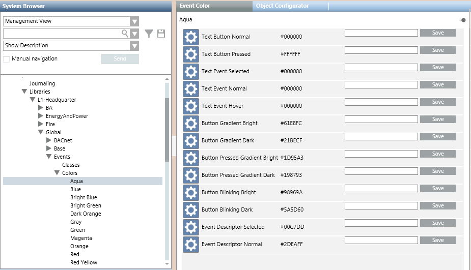

Event Colors
The Colors block of an Events library is used for defining a set of colors that can be used for displaying events. A basic set of colors is provided with the installation, under L1-Headquarter > Global > Events > Colors. For instructions, see Configuring Event Colors in a Library.

When you select an individual color in System Browser, the Event Color tab lists the gradations of that color (hex color code) that are used for different user interface elements. For details, see Key to the Event Color Tab, below. Color gradations can be edited by entering a new hex color code in the field alongside each item.
The colors defined in the system libraries are associated to event categories in the Category Mapping of an event schema. The colors available for associating to a category include all those defined in the system libraries, at every level (colors defined under L1, plus any custom colors defined elsewhere).

The event colors under L1-Headquarter > Global > Events are basic configurations provided by Headquarter and can be modified by Headquarter experts and Customer Support only. Depending on their allowed customization level, authorized experts can create additional custom colors (for example, under L4-Projects > Global > Events > Colors).
Key to the Event Color Tab
The following reference table defines the gradations of this color applied to different user interface elements.
Palette Item | Description | Example of Color |
Text Button Normal | Text color in the event lamp. |
|
Text Event Selected | Text color in the event descriptor when the event is selected. |
|
Text Event Normal | Text color in the event descriptor when the event is not selected. |
|
Text Event Hover | Text color in the event source (hover). |
|
Button Gradient Bright | Bright color gradient that applies at the top of the following buttons:
|
|
Button Gradient Dark | Dark color gradient that applies at the bottom of the following buttons:
|
|
Button Pressed Gradient Bright | Bright color gradient that applies at the top of the event lamp button when clicked. |
|
Button Pressed Gradient Dark | Dark color gradient that applies at the bottom of the event lamp button when clicked. |
|
Button Blinking Bright | Bright color gradient that applies at the top of the event lamp button when flashing. |
|
Button Blinking Dark | Dark color gradient that applies at the bottom of the event lamp button when flashing. |
|
Event Descriptor Selected | Event descriptor color when the event is selected. |
|
Event Descriptor Normal | Event descriptor color when the event is not selected. |
|